Learning Objectives
After completing this lesson, you’ll be able to:
- Create a Text type user parameter.
- Use an FME parameter to supply a value at run-time.
- Duplicate an existing parameter.
- Use a user parameter in a transformer.
- Use a user parameter in a ParameterFetcher transformer.
Instructions
In this lesson, you will:
- Scroll down to read the text below.
- Optional: You can view the video instead of reading the text. The video covers the text material.
- Complete the exercise by following the steps.
- Complete the Quiz toward the bottom of the page.
- Optional: Let us know if you found this lesson relevant to your role by filling out the survey at the bottom of the page.
- Click 'Next' to mark the lesson complete.
Resources
- Starting workspace
- C:\FMEData\Workspaces\AdvancedDataTransformation\parameterize-a-workspace.fmw
- Complete workspace
- C:\FMEData\Workspaces\AdvancedDataTransformation\parameterize-a-workspace-complete.fmw
- Parks.zip (MapInfo TAB)
- C:\FMEData\Data\Parks.zip
Introduction
In this example, imagine you are a GIS technician working for a city planning department.
The team responsible for maintaining parks has a workspace that converts their data from the MapInfo TAB source format to Google KML. It also writes an XML metadata file to show who translated the data and when.
At the moment, they face two problems:
- The XML output is not particularly well formatted
- All of the XML metadata fields are hard-coded in an AttributeCreator transformer. This is inconvenient, especially when they want to run the workspace on FME Flow!
You have been assigned to help solve these problems. At least one of these requires creating user parameters to replace hard-coded values.
1) Open Starting Workspace
- Start FME Workbench (2026.1 or later).
- Open the starting workspace (C:\FMEData\Workspaces\AdvancedDataTransformation\parameterize-a-workspace.fmw).
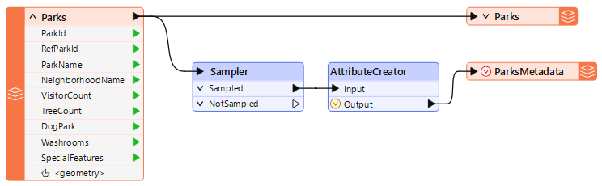
The metadata part of the translation consists of the two transformers and an XML writer feature type.
The Sampler transformer ensures that only one record is written to the output metadata by discarding all but one feature, and the AttributeCreator creates a set of attributes to write to the metadata.
- Check the parameters for each transformer in turn.
- These are FME parameters set by the workspace author and unavailable to the end user.
- These parameters appear in the Parameter Editor window, the transformers' parameters dialog, and the Transformers section of the Navigator window.
- Here, for example, are the parameters for the Sampler transformer:
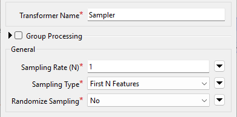
2) Change XML Writer Parameter
An FME parameter called Pretty Print controls the style of the XML file being written:
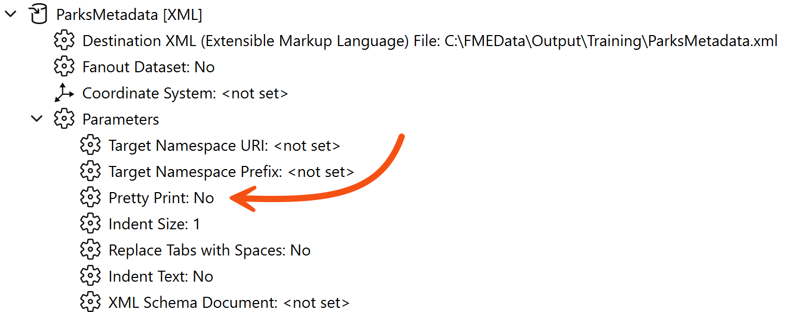
To ensure the output is always well-formatted, we should set this parameter to Yes - but we won't create a user parameter from it because we don't want the end-user to change it.
- In the Navigator window, locate the ParksMetadata [XML] writer.
- Expand the parameters list by clicking the right-pointing arrow, and locate the Pretty Print parameter.
- Double-click the Pretty Print parameter.
- In the dialog that opens, change the value to Yes and click OK to close the dialog.
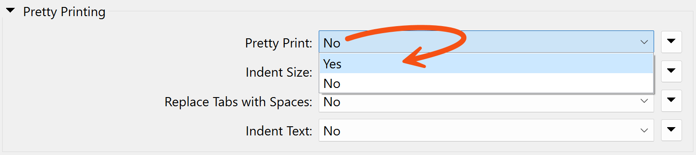
We have now changed an FME parameter as a workspace author.
3) Create a User Parameter
The output schema has three variable attributes: username, user company (organization), and user email. We should create a user parameter for each to allow the end-user to enter that information.
- Locate the User Parameters section of the Navigator window
- Right-click User Parameters.
- Choose Manage User Parameters...
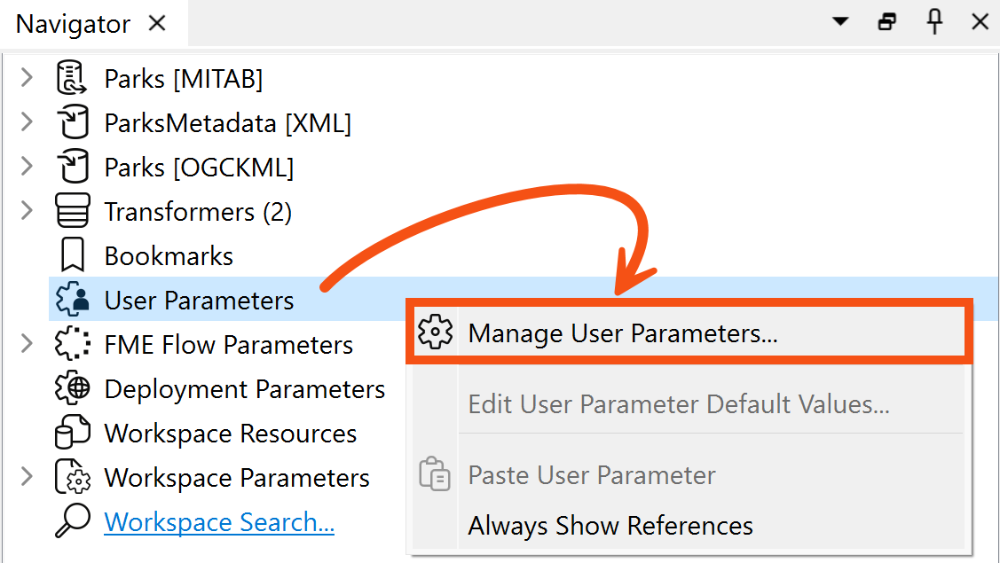
- In the User Parameters for 'Main' dialog, click the green plus icon and select Text as the type of parameter to create.
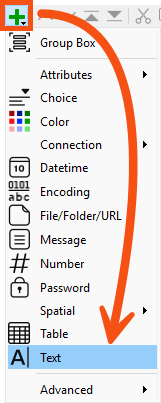
- Fill out the section on the right as follows:
| Parameter Identifier |
UserNameParam |
| Label |
Enter your name |
| Required |
Enabled |
| Show Label |
Enabled |
- Your dialog should look like this:
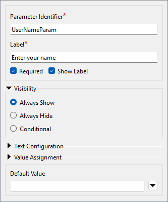
- Click OK to close the dialog and create the parameter, which appears in the Navigator window.
4) Create Remaining User Parameters
The quickest way to create the other two required parameters (UserMailParam and UserCompanyParam) is to duplicate the UserNameParam parameter.
- Right-click the UserNameParam parameter and choose the option to Duplicate.
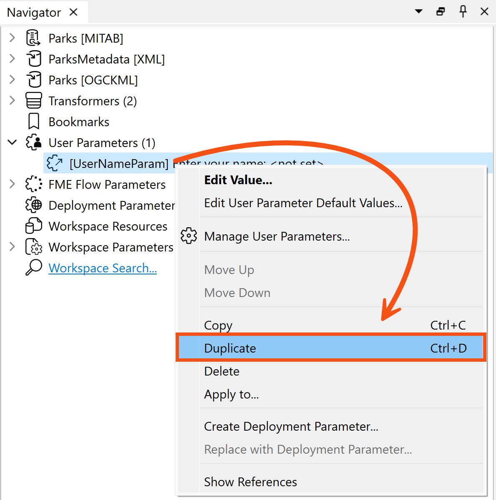
- Call the new parameter UserMailParam and set the prompt to “Enter your email address”.
- Repeat the duplication process to create a parameter called UserCompanyParam with the prompt "Enter your company name".
- When done, your Navigator window should look like this:
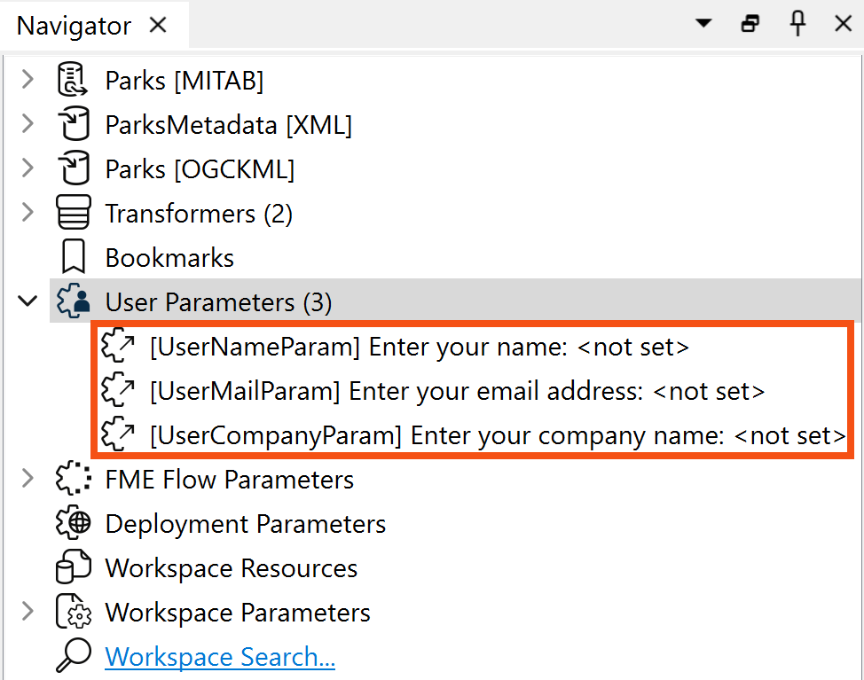
5) Use User Parameter – Method 1
Each user parameter we've just defined provides values we need to connect to attributes in the writer schema. There are several ways to extract the value for such a purpose, and we’ll use a different method for each parameter to illustrate the different methods.
- Double-click the AttributeCreator to open its parameters.
- This transformer is what currently creates the attributes for the output.
- Click in the Value field for the
AuthorName attribute.
- Click the drop-down arrow, then select User Parameter > UserNameParam.
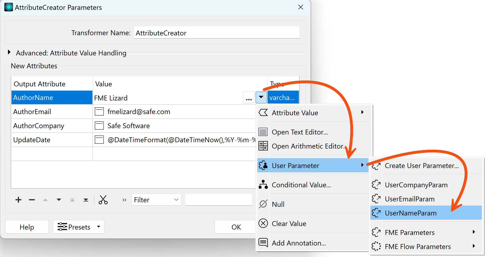
- Once done, the value field will change to a special icon and show the parameter that was chosen.
- While here, click on the AuthorEmail and AuthorCompany fields and press the minus button to delete them.
- We will deal with these differently.
- Click OK to close the AttributeCreator parameters.
6) Use User Parameter – Method 2
A second way to extract the value from a user parameter is with a ParameterFetcher transformer.
- Place a ParameterFetcher transformer after the AttributeCreator.
- Double-click the ParameterFetcher to open its parameters.
- Select UserMailParam as the Parameter to fetch. Enter
AuthorEmail as the name of the Target Attribute, then select UserCompanyParam and enter AuthorCompany as the Target Attribute.
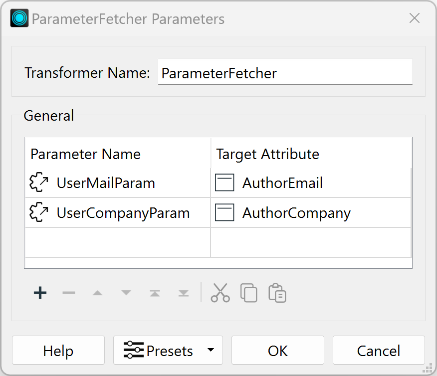
7) Use User Parameter – Method 3
Did you notice that the list of available parameters includes many FME-related system parameters? These are particularly useful when using FME Flow and for writing metadata, as we are here.
- Locate the
BuildNumber attribute on the ParksMetadata feature type, expanding it if necessary.
- It's currently not receiving any values, indicated by a red arrow:
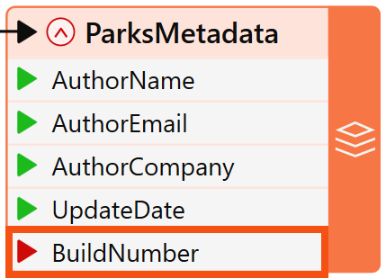
Let's fix that.
- Open the AttributeCreator again and add an attribute called BuildNumber.
- Click on the drop-down arrow, select User Parameters > FME Parameters, and then select FME_BUILD_NUM.
- You could enter a fixed (constant) value in the Value column, but in our case, we want the value to be filled in dynamically when the workspace runs.
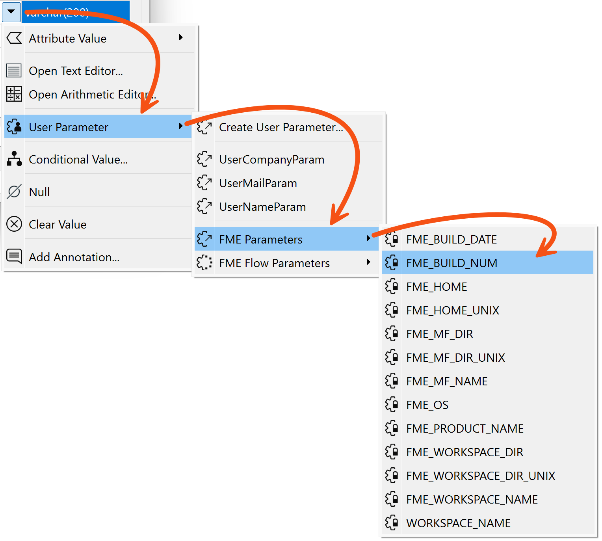
- Click OK to close the dialog.
- The feature type will highlight the attribute with a green right-pointing arrow to show that it now has a value.
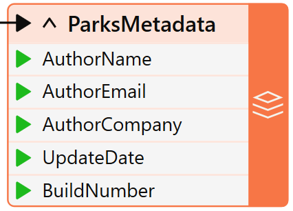
8) Save and Run Workspace
- Ensure Prompt for Parameters is enabled.
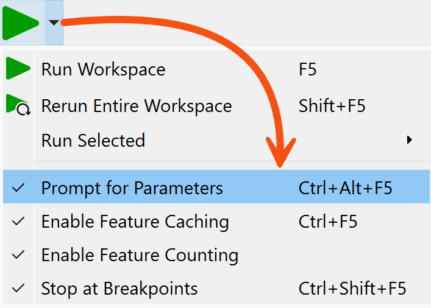
- Save the workspace and run it as if you were the end-user.
- When prompted, enter your details into the fields that have been newly created.
- Notice that the BuildNumber parameter we created isn't in the prompt.
- This is because it is an FME-specific private parameter that the user doesn't need to change:
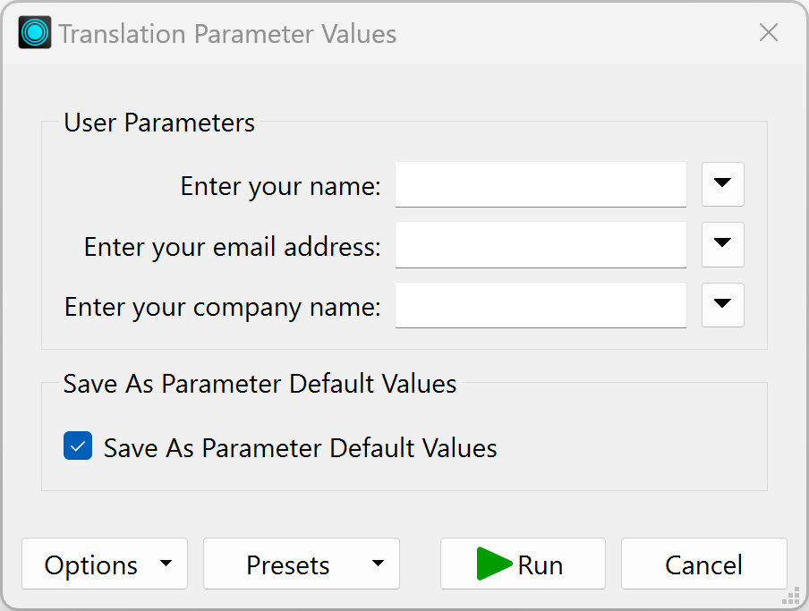
- Once the workspace runs, locate and open the XML file to ensure the contents have been inserted as expected.
<?xml version="1.0" encoding="UTF-8"?>
<fme:xml-tables
xmlns:xsi="http://www.w3.org/2001/XMLSchema-instance"
xmlns:fme="http://www.safe.com/xml/xmltables" xsi:schemaLocation="http://www.safe.com/xml/xmltables ParksMetadata.xsd">
<fme:ParksMetadata-table>
<fme:ParksMetadata>
<fme:AuthorName>Bob User</fme:AuthorName>
<fme:AuthorEmail>bob@safe.com</fme:AuthorEmail>
<fme:AuthorCompany>Safe Software</fme:AuthorCompany>
<fme:UpdateDate>2024-02-01</fme:UpdateDate>
<fme:BuildNumber>23764</fme:BuildNumber>
</fme:ParksMetadata>
</fme:ParksMetadata-table>
</fme:xml-tables>